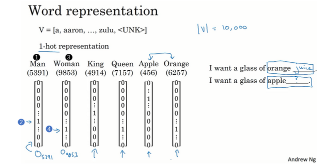
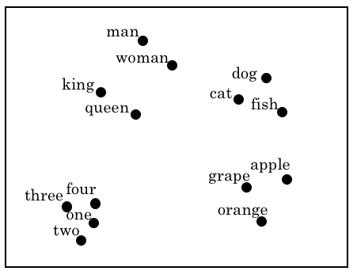

前言
词汇表示（Word Representation）一直是自然语言处理中最基础也是最重要的任务之一。 深度学习已经给这一领域带来了革命性的变革。其中一个很关键的概念就是词嵌入（word embeddings），这是语言表示的一种方式，可以让算法自动的理解一些类似的词，比如男人对女人，比如国王对王后，还有其他很多的例子。
本文是我在学习吴恩达深度学习课程中的词汇表示一章的总结与思考，同时参考了一些书籍和网上的资料编写而成。写这篇文章的主要目的是加深自己的理解，如有错误欢迎在评论区指出，非常感谢！
one-hot表示法
one-hot表示法是机器学习中表示离散化特征的一种重要方法，在NLP任务中，我们同样可以使用它来表示词。在神经网络序列模型的博客中，我已经介绍了使用one-hot向量表示单词的步骤，这里我再简单说明一下：
- 建立一个向量，包含常用的词汇，形成一个词汇表（vocabulary） 。词汇表的大小是人为设定的，这里，我们使用10,000个单词来构建我们的词汇表。 对于一般规模的商业应用来说30,000到50,000词大小的词典比较常见，但是100,000词的也不是没有，而且有些大型互联网公司会用百万词，甚至更大的词典。
- 接下来，我们为单词建立one-hot向量，假如一个词在词汇表中的序号为1234，那么它的one-hot向量就是在1234行为1，其余行均为0的10000维列向量。
- 特别地，我们需要考虑未登录词、开始标记、结尾标记等情况。未登录词指的是不在词汇表中的单词，我们需要在词汇表添加标记\UNK来表示它们。此外，在构建语言模型、进行机器翻译等过程中，我们还需要使用到开始标记、结尾标记，它们表示的是句子的开始、结尾位置。例如，一旦语言模型生成了结尾标记，我们就可以认为句子生成完毕。我们在词汇表中添加\BOS和\EOS来表示他们。

这种表示方法的一大缺点就是它把每个词孤立起来，这样使得算法对相关词的泛化能力不强。 每个one-hot只是为了表示单词自己而已，无法让算法很容易的跨单词泛化，即它无法表示任何两个单词之间的关系，因为任何两个单词one-hot向量的内积为都是0。
例如，我们需要建立一个语言模型来生成句子，假设我们已经学习了下面这个句子：
I want a glass of orange juice.
在另一个任务中，我们已经预测了如下的句子：
I want a glass of apple __.
由于在one-hot表示法中，单词orange和单词apple间没有任何关联，所以即使模型知道了orange juice是比较常见的搭配，也无法学习到apple juice也是一种常见的情况。所以，空格处无法正确填入单词juice。
此外，one-hot向量通常维度很高（与词汇表的大小一致），同时它又是非常稀疏的（只在一个位置为1），所以使用one-hot向量表示词将会使模型的参数变多，难以训练。
词嵌入表示法
有没有方法可以更好的表示词，能够捕捉词义以及词间的关联呢？答案是有的，我们可以使用特征化的方法来表示一个单词。
比如下图所示，一共有4个属性（实际应用会更多）：性别、是否为皇室、年龄、是否为食品。每个单词分别从这4个属性给出与这些属性的相关度。那么任何一个单词就可以用一个4维的特征向量表示，比如Man表示为(-1, 0.01, 0.03, 0.09)。
此时，可以清晰的看到Apple和Orange极为相似，上面的例子就很容易使得算法在第二句话也填入单词juice。
当我们将单词使用这种高维特征表示时，就叫做词嵌入（word embedding）。之所以叫做embedding，可以想象成每个单词被嵌入（embed）到了一个高维空间内。词嵌入是NLP最重要的思想之一。
需要说明的是，上面的特征只是直观的举例，实际上的特征并不是手工设计的，而是算法（即word embedding）学习而来；而且这些学习的特征，可能并不具有良好的解释性，但不管怎样，算法都可以快速哪些单词是相似的。
此外，词嵌入向量的维度通常情况下远远小于词汇表中单词的数目，所以一定程度上减少了参数数量，减轻了训练的负担。
我们可以使用t-SNE算法进行高维词向量的可视化，可以看到，词义相近的单词在经过词嵌入后被聚在了一起：

词嵌入的作用
迁移学习
我们以一个命名实体识别（NER）的任务为例，假设训练集中存在着这么一句话：
Sally Johnson is an orange farmer.
我们在这里使用一个BRNN模型，并使用词嵌入向量来表示单词，作为BRNN的输入。BRNN可以根据orange farmer判断出Sally Johnson是一个人名。
当我们遇到了新的输入，如：
Robert Lin is an apple farmer.
由于apple的词嵌入和orange的词嵌入是相似的，所以模型也可以容易的识别Robert Lin是一个人名 。
假如我们的输入中含有冷僻词，如：
Robert Lin is a durian cultivator.
durian（榴莲）和cultivator（培育家）是较为少见的单词，很可能在我们的训练集中没有出现过。使用我们传统的one-hot向量表示，将难以预测出 Robert Lin是一个人名。而如果我们使用词嵌入表示法，那么durian和orange将拥有相似的向量，cultivator和farmer将拥有相似的向量，模型能够依据orange farmer和人名的关系，推断出durian cultivator和人名的关系，进而预测出 Robert Lin是一个人名。
为什么词嵌入能够学习到没有在当前训练集文本中出现过的词的关联呢？这是因为：词嵌入向量的训练通常是在海量无标签文本上进行的，后面我们会介绍它的训练方法。
当训练集数量较小时，词嵌入效果往往会很明显，因为它能够大大丰富输入模型的信息量，提供了词义信息。 在其他的迁移学习情形中也一样，如果你从某一任务A迁移到某个任务B，只有A中有大量数据，而B中数据少时，迁移的过程才有用。所以对于很多NLP任务词嵌入效果明显，而对于一些语言模型和机器翻译则不然，因为他们本身数据量就很庞大。
类比推理
词嵌入还可以帮助实现类比推理（analogy reasoning）。还是以之前的数据为例：
使用词嵌入，我们可以发现一个有趣的性质：已知 man如果对应woman，我们可以使用词嵌入投影自动得到 king对应queen 。
我们使用man的词嵌入向量$e_{man}$减去woman的词嵌入向量$e_{woman}$，可以得到：
我们使用king的词嵌入向量$e_{king}$减去queen的词嵌入向量$e_{queen}$，可以得到：
可以发现，二者的差值是非常接近的。这是因为： man和woman主要的差异是gender（性别）上的差异，而king和queen之间的主要差异，根据向量的表示，也是gender（性别）上的差异 ，所以两个差值会很相近。
通过这一性质，我们可以通过某个已知词对的关系，推导出与另一个词最符合该关系的词是什么。例如，已知man和woman的关系，想要知道哪个词和king也符合该关系，只需要找到能够最大化$e_{king}-e_w$与$e_{man}-e_{woman}$的相似度的单词$w$即可。
$$
Find\ word\ w:argmax\ Sim(e_w,e_{king}-e_{man}+e_{woman})
$$
通常来说，我们在这里选用余弦相似度，即计算两个向量的余弦值，来度量两个向量$u$和$v$的相似程度：
$$
Sim(u,v)=\frac{u·v}{||u||_2||v||_2}
$$
Word2Vec
为了训练出词嵌入向量，我们可以使用Word2Vec模型。 Word2Vec是一种简单并且计算高效的学习词嵌入的算法。
Word2Vec的核心思想是学习一个神经网络语言模型来训练词向量。它基于这样的一个假设：上下文相似的词，其词嵌入向量也是相似的。例如，存在以下两个句子：
我喜欢吃苹果。
我喜欢吃梨子。
我们知道，苹果和梨子的语义是非常接近的，在上述例子中，苹果和梨子的上下文也非常相似，所以我们的模型将训练得到苹果和梨子相似的词嵌入向量。
Word2Vec采用了分布式语义的方法来表示一个词的含义。本质上，一个词的含义就是这个词所处的上下文语境。回想一下我们高中做英语完形填空时，一篇短文，挖了好多空，让我们根据空缺词的上下文语境选择合适的词。也就是说上下文语境已经能够确定这个词的含义了，如果选词正确，也就意味着我们理解了这个空缺词的含义。
Word2Vec使用的语言模型分为两类，也就是说有两种学习词嵌入的方式，分别为：
- 如果是用一个词语作为输入，来预测它周围的上下文，那这个模型叫做『Skip-gram 模型』。
- 而如果是拿一个词语的上下文作为输入，来预测这个词语本身，则是 『CBOW 模型』。（就是上面完形填空的例子）
Skip-gram模型
首先，我们介绍Word2Vec中的Skip-gram模型。它是用一个词语作为输入，来预测它周围的上下文。
假设在训练集中给定了一个这样的句子：
I want a glass of orange juice to go along with my cereal.
在Skip-Gram模型中，我们要做的是抽取上下文和目标词配对，来构造一个监督学习问题。我们要的做的是随机选一个词作为上下文词，比如选orange这个词，然后我们要做的是随机在一定词距（即窗口，window）内选另一个词，比如在上下文词前后5个词内或者前后10个词内，我们就在这个范围内选择目标词。于是我们将构造一个监督学习问题，它给定上下文词，要求你预测在这个词正负10个词距或者正负5个词距内随机选择的某个目标词，构造这个监督学习问题的目标并不是想要解决这个监督学习问题本身，而是想要使用这个学习问题来构造出一个好的词嵌入模型 。
Skip-gram的字面含义是跳跃掉某些元，也就是在上下文窗口内随机选择某个词作为目标词，而不用考虑是否连续。
当然，我们也可以不使用随机选取目标词的做法，而是选择窗口内的每一个词作为目标词，和当前上下文词组成样本投入模型进行训练，如下图所示。这种做法的代价相应地也较高。为了解决这个问题，可以使用subsampling 的方法，通过计算每个样本的一个保留概率，以这个概率决定是否删掉对应的样本。（实际上和随机选取窗口内的某个单词本质是一样的）
接着，我们使用一个简单的单隐藏层基本神经网络来训练出我们想要的词嵌入向量。网络的结构如下图所示：
可以看到网络有以下几个细节：
- 输入层是我们之前选择的上下文词的one-hot向量，即单词的原始表示。
- 隐藏层维度是自定义的，我们想要得到多少维的词嵌入向量，就可以把隐藏层设置为多少层。并且，隐藏层是线性的，没有使用非线性的激活函数，可以做到简化语言模型的目的，这也是Word2Vec的优势。
- 输出层的维度与词汇表维度一致，使用Softmax激活函数作为分类器，输出词汇表中每一个词作为目标词的概率。
- 输入层、输出层、隐藏层全连接。
神经网络的训练方式我已经在之前的博客中有所介绍。这里，考虑到是一个有监督的多分类问题，我们可以使用交叉熵损失函数作为模型的优化目标，并通过梯度下降法拟合模型的参数。
经过训练，我们得到了模型的权重矩阵$V$和$U$。其中，从输入层到隐藏层的权重矩阵$V$中，由于输入的是one-hot向量，所以只有对应上下文词所在位置$x$的权重向量$V_x$被激活，它的维度与隐藏层单元个数是相等的，我们称其为输入向量，因为每个单词在one-hot向量中的位置不相同，使用$V_x$可以唯一地表示$x$。
从隐藏层到输出层的权重矩阵$U$中，我们也可以使用输出层中上下文词所在位置$x$的权重向量$U_x$表示$x$。同样，它的维度和隐藏层单元个数相等，我们称之为输出向量，他也可以唯一的表示$x$。
一般情况下，我们更常使用输入向量作为单词$x$的词嵌入表示。
此外，Skip-gram还可以选择多个单词作为当前上下文词的目标词，网络结构仅需微调即可，依然可以选择相同的输入向量和输出向量作为上下文词的词嵌入表示。
CBOW模型
CBOW模型，即连续词袋模型 （Continuous Bag-Of-Words Model） ，它的预测方式和Skip-gram模型正好相反，使用一个词语的上下文作为输入，来预测这个词语本身。
可以看到，CBOW模型和Skip-gram模型的网络结构几乎一致，我们只需要将上述多目标词的Skip-gram的网络结构的计算反过来即可。我们依然可以使用交叉熵损失函数作为模型的优化目标，并通过梯度下降法拟合模型的参数。
顺便说一下，CBOW模型的原理有些类似于Bert中的Mask，不过Bert中的Mask是在一个句子中随机遮住一些单词，用剩下的单词去预测它们，从而训练词嵌入。而CBOW模型需要预测句子中的每个词。
Word2Vec的优化
分级softmax分类器
Word2Vec模型中有一个比较大的缺陷就是Softmax层的计算量太大，尤其当词汇表中的单词很多的时候。我们需要对Softmax层的所有单元计算得到的分数求指数并且求和，事实上当词汇数量达到百万、千万级别，这是很缓慢的。
针对这个问题，学者们提出了一种优化方法，叫做分级（hierarchical）softmax分类器。
分级softmax分类器的基本思想和二叉查找树有一些相近，它将原先的softmax层更换成以下的结构：
上述结构很像一个二叉查找树，树上的每一个节点都是一个sigmoid二分类器。假设我们有10000个词，即输出层有10000个单元。根节点的第一个二分类器会告诉我们结果是否在前5000个，是则进入左子树，否则进入右子树。依次类推，最终我们将定位到叶子节点，即结果是第几个单词。
根据上述方法，我们将线性时间复杂度$O(n)$降成对数时间复杂度$O(logn)$，从而加速输出层的运算。
特别地， 在实践中分级softmax分类器不会使用一棵完美平衡的分类树或者说一棵左边和右边分支的词数相同的对称树（上图编号1所示的分类树）。实际上，分级的softmax分类器会被构造成常用词在顶部，然而不常用的词像durian会在树的更深处（上图编号2所示的分类树）。具体实现通常采用数据结构中的常用结构哈夫曼树。
负采样
Word2Vec模型的训练样本很多，如果对于每一个训练样本，都更新所有参数，那么训练速度将会很慢。为此，学者们提出了负采样（Negative Sampling）的方法，来减少每次训练所更新的样本个数。
我们将定义新的监督学习问题：给定一个单词对（比如orange和juice），预测这两个单词是否是context-target对。也就是将原先的softmax多分类转化为了逻辑回归的sigmoid多分类（one vs all）。假设词汇表中有10000个单词，相当于我们构造了10000个独立的逻辑回归模型。
- 首先我们产生一个正样本（Positive Example），正样本的生成方法和skip-gram中类似，选择一个context单词，在一个windows大小附近随机选择一个target单词。比如上例语句中的orange和juice，我们把正样本标记为1。
- 然后使用相同的context，生成负样本（Negative Example），负样本的对应的单词从词汇表里随机选取，比如生成一个负样本orange-king，并将负样本标记为0。同样的方法，生成更多更多的负样本，可能是：orange-book, orange-the, orange-or。由于是随机选择的，我们总认为是负样本，因此即便上面的orange-of的例子，of其实是Orange的target，我们依然标记为0。最终形成如下记录：
一个正样本，会选择多个负样本，其个数记为k，在较小数据集下k通常推荐取5-20，如果数据集较大，则k取值较小，比如2-5。
我们为10000个词分别构建独立的逻辑回归模型（也就是one vs all的多分类方法），然后每次训练时更新正负样本的模型参数。这样，我们每次迭代并不需要训练原先10000维softmax层那么多的参数（300万个参数），而是只需要训练5个逻辑回归模型的参数（1500个参数），训练的计算量大大降低。
怎样选择负样本？ 这个算法有个重要细节是如何选择负样本，一种办法是根据每个单词在语料库中的经验概率进行采样，但会导致常用词被采样的频率很高；还有一种是均匀分布的采样，完全不考虑单词的实际频率。负采样中，负样本被选中的概率和词频成正比，词频越大的词被选中的概率越大。概率公式如下:
$$
p(w_i)=\frac{f(w_i)^{3/4}}{\sum_{j=1}^{10000}f(w_j)^{3/4}}
$$
其中$f(w_i)$是一个单词在语料库中的观测频率。通过取3/4次方，使得既考虑到单词的语料库频率，又能增加低频单词被选取的概率。
GloVe
之前已介绍了几个词嵌入的算法，NLP领域还有一个有一定势头的算法GloVe（global vectors for word representation），虽然并不如Word2Vec或skip-gram常用，但足够简单。
算法介绍
我们使用$X_{ij}$代表单词i出现在单词j的上下文的次数。因此$X_{ij}$，就表示单词i和j一起出现的频繁程度。使用窗口将整个训练文本遍历一遍，即可得到共现矩阵$X$。
如果定义上下文的含义是在10个单词前后范围内，显然可以得出$X_{ij}=X_{ji}$，即对称性。如果定义上下文是紧挨着的前一个单词，则没有对称性。但对于GloVe，我们一般选择前者的定义。
我们定义模型的优化目标为（具体推导参见 https://blog.csdn.net/coderTC/article/details/73864097 ）：
$$
J=\sum_i^n\sum_j^nf(X_{ij})(θ^t_ie_j+b_i+b_j−log(X_{ij}))^2
$$
通过最小化上式，可以学习到一些向量，能够对两个单词同时出现的频率进行预测。另外，式中的$f(X_{ij})$有两个作用：
- 当$X_{ij}=0$时，$log(X_{ij})$为无穷大，无法计算。此时定义$f(X_{ij})=0$，即对这样的情况不纳入计算。换句话说，至少要求两个词同时出现过一次。
- 另外，作为权重，调节常用和非常用单词的计算权重。既不给常用词过大的权重，也不给非常用词过小的权重。这一块详细参考GloVe的论文。
另外，由于GloVe的对称性，所以$\theta$和$e$是对称的，或者说在优化目标中起的作用是一样的，因此最终我们通常将它们的均值作为最终的词向量，即：
$$
e_w^{final}=\frac{e_w+\theta_w}{2}
$$
虽然GloVe算法的优化函数非常简单（仅是一个二次代价函数），但结果确实奏效，可以学习到良好的词嵌入。
ELMO
Word2Vec和GloVe虽然是最常用的几种词嵌入模型之一，但他们也存在着一个严重的缺陷，即假设每个单词只有一个词义。换句话说，Word2Vec无法针对每个单词的不同词义分类讨论。而多义词往往是非常常见的，我们仅以一个词嵌入向量来描述它不够合理。例如，我们有一个单词“包袱”，存在着以下的句子：
他背起包袱向远方走去。
以及另一个句子：
他的相声说的很好，经常都抖出有趣的包袱。
可以看到，同一个词“包袱”在不同的语境下，含义迥然不同。上述例子中，我们称不同句子中的“包袱”为同一个Type，却是不同的Token。
为了解决上述缺陷，学者们提出了ELMO模型（Embedding from Language Model），从而实现了上下文化的词嵌入（Contextual Word Embedding），也就是针对Token进行词嵌入。这样，即使是同一个单词，所在的上下文语境不同，其词嵌入向量也不同，解决了Word2Vec对多义词处理的不足。
ELMO模型的训练方法是采用基于RNN（循环神经网络）的语言模型。更详细一些，是使用双向LSTM语言模型，并采用Word2Vec词嵌入向量作为模型的输入，训练得到ELMO词嵌入。
ELMO模型的架构如下图所示：
BRNN和LSTM的知识在我的神经网络序列模型的博客中已经有所介绍。这个Bi-LSTM语言模型就是通过已知的前面所有的单词和后面所有的单词，预测出当前位置正确的单词，即最大化当前位置正确单词的条件概率。这个最优化问题可以使用softmax的交叉熵损失函数求解。
需要注意的是，这里使用的Bi-LSTM-LM是多层的，即为Deep-Bi-LSTM-LM。我们选取第k个时间步每一层的LSTM单元输出，加权求和，最后乘以当前句子的权重，即为当前句子第k个词的ELMO词嵌入向量，其维度与LSTM单元隐藏层的维度的两倍一致（每层LSTM单元激活值输出是对前向和后向传播来的激活值的拼接，所以是两倍）。示意图可以参考李宏毅老师的PPT：
具体计算公式如下图所示：
$$
ELMO^{task}_k=\alpha^{task}\sum_{j=0}^LS_j^{task}h^{LM}_{k,j}
$$
对于第task句子的第k个词，其ELMO向量表达为：每个句子独特的权重$\alpha^{task}$乘以从0到$L$层每层的权重$S_j^{task}$乘以该层的激活值输出$h^{LM}_{k,j}$的总和。
这里，$h^{LM}_{k,j}$在第0层即为模型输入的Word2Vec词嵌入向量。第1到$L$层的$h^{LM}_{k,j}$为该位置前向和后向传播而来的激活值的拼接。
为什么需要对不同层的输出乘以不同的权重呢？因为研究人员发现：不同层的Embedding适用于不同的任务。 总体而言，ELMO模型每层学到的东西是不一样的，所以将他们叠加起来，对任务有较好的的提升。 试验结果表明：上层Embedding对语义理解更好，而下层对词性、词法理解更好。$S_j^{task}$可以根据不同的任务自己设定。
总结
以上就是常规的预训练语言模型Word2Vec、GloVe和ELMO的基本知识了，我在这里粗略的对他们进行了总结。事实上，目前最好的预训练模型是谷歌的BERT模型，我即将在下一篇博客介绍它的原理。